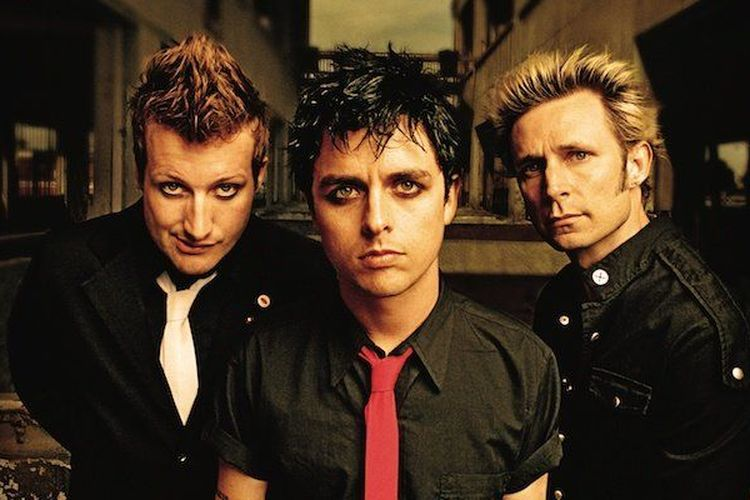
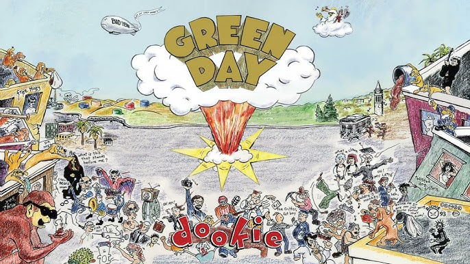
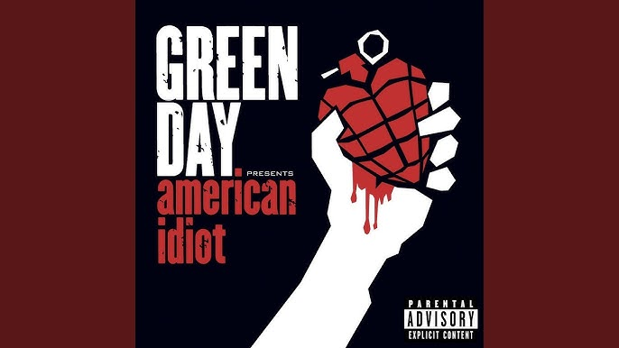
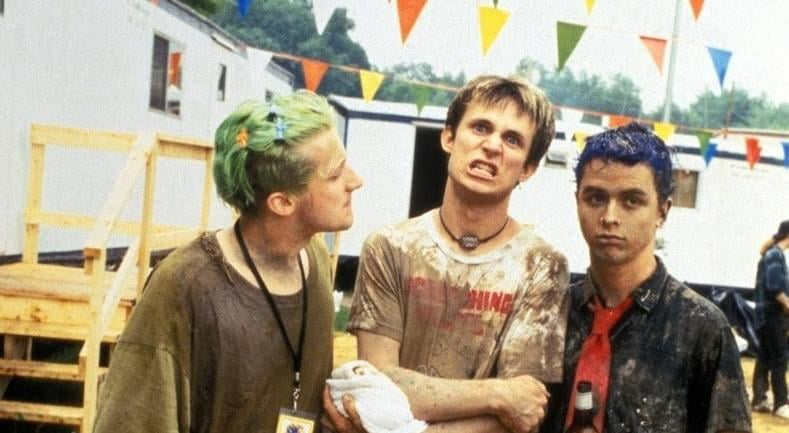

SEJARAH

Green Day dibentuk pada 1986 di kota Berkeley, California, oleh trio Billie Joe Armstrong, Mike Dirnt, dan John Kiffmeyer. Setelah Kiffmeyer keluar, Tre Cool menggantikannya sebagai drummer pada tahun 1990. Album debut mereka, "39/Smooth,"
dirilis pada tahun yang sama, diikuti oleh "Kerplunk" pada tahun 1992. Namun, keberuntungan besar datang dengan album ketiga mereka, "Dookie," pada tahun 1994, yang membawa mereka ke puncak popularitas punk rock.
Meskipun album "Dookie" meraih kesuksesan besar, album-album berikutnya seperti "Insomniac" tahun 1995, "Nimrod" di tahun 1997, dan "Warning" pada tahun 2000, tidak mencapai tingkat yang sama secara komersial. Namun, pada tahun 2004, Green Day merilis album rock
opera revolusioner mereka, "American Idiot," yang tidak hanya memperoleh pengakuan kritis tetapi juga menjadi titik balik popularitas mereka dengan penjualan lebih dari 5 juta kopi di Amerika.Green Day terus menunjukkan kesuksesan mereka dengan album-album seperti
"21st Century Breakdown" tahun 2009 dan trilogi album "¡Uno!, ¡Dos!, dan ¡Tré!" tahun 2012. Sepanjang karir mereka, Green Day telah menjual lebih dari 75 juta album di seluruh dunia dan memenangkan lima penghargaan Grammy Awards, termasuk Best Alternative Album
untuk "Dookie" dan Best Rock Album untuk "American Idiot." Selain menjadi ikon dalam genre punk rock, mereka juga menjadi kiblat bagi generasi baru musisi.
ALBUM
Sepanjang karir nya Green Day telah merilis beberapa album yang sangat sukses di pasaran seluruh dunia. Hingga saat ini band tersebut telah merilis sebanyak 13 album, dengan setiap album memberikan kontribusi unik terhadap perjalanan musik mereka. Berikut beberapa
album populer Green Day yang suskses di dunia.
Dookie (1994)

Dookie merupakan album studio ketiga karya Green Day. Album ini diluncurkan pada tanggal 1 Februari 1994 melalui Reprise Records. Album ini merupakan album major label pertama mereka. Dookie menuai sukses komersial yang mendunia, dengan berhasil menjadi posisi kedua
di chart Billboard 200 Amerika Serikat dan memasuki chart di tujuh negara. Album ini berhasil membawa Green Day kepada arus popularitas. Dookie menghasilkan lima singel hits, yaitu "Longview", "Welcome to Paradise", "Basket Case", "When I Come Around", dan singel radio
"She". Terhitung pada tahun 2010, Dookie menjadi album Green Day dengan penjualan terbaik setelah tercatat terjual sebanyak 15 juta copy di seluruh dunia. Album Dookie berhasil memenangkan Grammy Award untuk kategori Best Alternative Music Album pada tahun 1995.
American idiot

American Idiot adalah album ketujuh dari Green Day. Album ini diluncurkan pada tanggal 21 September 2004 melalui label Reprise Records dan diproduseri oleh Rob Cavallo. Album ini mulai direkam di Studio 880 , kota Oakland, California, dan diselesaikan di Los Angeles.
American Idiot sendiri merupakan album konsep di mana album ini bercerita tentang kisah "Jesus of Suburbia", seorang tokoh fiksi anti-hero yang dikarang oleh sang vokalis Billie Joe Armstrong. American Idiot bisa dibilang sukses di seluruh dunia, album ini berhasil
memasuki chart di 26 negara berbeda dan telah mencapai posisi pertama di 19 negara, termasuk Amerika Serikat dan Inggris. Album ini terjual sebanyak 267.000 copy pada minggu pertama perilisannya, dan sejak dirilis telah terjual lebih dari 6 juta copy di Amerika Serikat
dan dengan total lebih dari 14 juta keping di seluruh dunia. Album ini berhasil meraih penghargaan Grammy ke-47 pada kategori Album Rock Terbaik (Best Rock Album).
KISAH WOODSTOCK 1994

Penampilan Green Day di Woodstock '94, termasuk insiden hujan lumpur, adalah salah satu momen yang sangat dikenang dalam sejarah festival tersebut. Pada 14 Agustus 1994, Green Day tampil di panggung utama Woodstock '94 di depan ribuan penggemar. Saat itu, cuaca sangat
panas, dan ketika Green Day tampil, sebagian besar penonton telah terkena panasnya sinar matahari sepanjang hari. Akibatnya, banyak dari mereka merasa kelelahan. Saat Green Day mulai memainkan lagu-lagu mereka yang energik, semangat penonton mulai memanas, dan seketika
hujan mulai turun, banyak di antara mereka merasa lega karena dapat meredakan panasnya cuaca. Namun, terjadi hal yang tak terduga yaitu turunnya hujan lumpur. Para penonton yang sudah merasa bersemangat karena penampilan Green Day, memanfaatkan situasi ini dengan mulai
melemparkan lumpur satu sama lain.
Seiring berjalannya konser, semakin banyak lumpur yang berterbangan. Para anggota Green Day pun ikut terkena lumpur yang dilemparkan oleh penonton. Vokalis Green Day, Billie Joe Armstrong, memanfaatkan momen ini dengan memanggil penonton
untuk berpartisipasi dalam lempar lumpur bersama-sama. sang vokalis bahkan mengenakan sepatu lumpur sendiri saat melompat-lompat di atas panggung. Insiden ini menciptakan suasana yang sangat liar dan bebas, yang menjadi salah satu momen paling ikonik dalam sejarah festival
Woodstock '94. Meskipun insiden hujan lumpur tersebut awalnya mungkin dianggap sebagai gangguan, banyak yang kemudian melihatnya sebagai bagian integral dari keseluruhan pengalaman Woodstock '94 yang mencerminkan semangat kebebasan dan spontanitas dari festival tersebut.